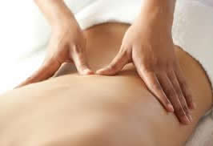

Experience our Professional Services |
At Crown Health Centre, all of our therapists are reliable and have many years of experience. Get the treatment you deserve and schedule an appointment with us today.
Services Include:
- REHABILITATION (MVA)
- EXTENDED HEALTH CARE PLAN(EHP)
- WORK INJURY COMPENSATION (WSIB)

Physiotherapy is a health care profession directed at evaluating, restoring and maintaining physical function. It is a distinct form of care which can be performed either in isolation or in conjunction with other types of medical management.
Physiotherapy can be useful in the diagnosis and management of a wide range of injuries, disease processes, and other conditions.
Back to top
|
| Initial assessment treatment: |
$105 |
| Following treatment: |
$45-$85 |
|

Chiropractic is a health care profession that focuses on disorders of the musculoskeletal system and the nervous system, and the effects of these disorders on generalhealth. Chiropractic care is used most often to treat neuromusculoskeletal complaints, including but not limited to back pain,neck pain, pain in the joints of the arms or legs, and headache.
Our chiropractorpractices Activator Method. The Activator Method Chiropractic Technique is a gentle, low-force approach to chiropractic care. The technique utilizes specific protocols to detect spinal joint dysfunction, analyze leg length inequality, identify issues with body mechanics, and test neurological reflexes. By analyzing results of these examinations, an Activator doctor can initiate the process of restoring spinal balance in the patient, gently and effectively.
A wide variety of health problems stem from spinal imbalance and dysfunction of the spinal joint and nervous system. Everyday living, stress and old injuries can cause vertebrae to lose their proper position or motion. This dysfunction can irritate your nervous system, causing pain and nerve interference throughout the body. By restoring spinal balance, chiropractic care aids the body in healing itself.
Providing:
- Chiropractic Assessment & Spinal Care
- Low level Laser
- Activator Method
Back to top
|
| Initial assessment: |
$105 |
| Chiropractor treatment: |
$45 |
|

Massage Therapy is the oldest known healing art. By using therapeutic touch through massage, a registered massage therapist can effectively reduce everyday aches and pains; headaches; sprain and strains caused by car accidents or sports related injuries. A massage can help reduce chronic and acute stress by way of releasing "fell good" hormones (endorphins) that relieve pain and induce feelings of contentment.
Back to top
|

| 60 mins massage therapy: |
$85 |
| 45 mins massage therapy: |
$65 |
| 30 mins massage therapy: |
$45 |
|

Developed in China, acupuncture is a 3,000-year-old system of medicine that is based upon principles of homeostasis and is commonly used for the treatment of pain and alleviation of symptoms.
How Can Acupuncture Help Me?
Acupuncture has traditionally been used as a method of balancing the body’s energy by inserting needles under the skin at specific points along energy pathways (meridians), to prevent or cure diseases and/or disorders. The modern Western medical or ‘neuroanatomical’ acupuncture approach, however, recognizes that needles inserted at acupuncture points induce biochemical changes in the body, such as the release of pain relieving endorphins. A medical approach to acupuncture uses the therapist’s knowledge of anatomy and neuro-physiology in relation to your condition to guide the selection of points in contrast to the Traditional Chinese Medicine approach, which uses the meridian system.
Back to top
|
| Acupuncture treatment: |
$45 & up |
|

Back to top
|
| 30 mins therapy: |
$35 |
| 60 mins therapy: |
$58 |
| 90 mins therapy: |
$78 |
|

Reflexology is an alternative medicine that helps to rejuvenate your feet and body. This traditional Chinese practice is safe and reliable. It works by massaging specific parts of the foot that reflect counterparts of the human body as a type of healing process. Come in today to see how our reflexology services improve your overall health.
Back to top
|
Per 45 mins treatment: |
$45 |
| (Get a FREE 15 mins herbal foot steep) |
|

Podiatry or Podiatric Medicine is a branch of medicine devoted to the study of, diagnosis, and treatment of disorders of the foot, ankle, and lower leg. A Podiatrist is a specialist qualified by their education and training to diagnose and treat conditions affecting the foot, ankle, and related structures of the leg. Within the field of podiatry, podiatric physicians can focus and specialize on different areas, including surgery, sports medicine, biomechanics, geriatrics, pediatrics, internal medicine, diabetes, orthopedics, or primary care.
| Initial assessment treatment: |
$95 |
| Follow-up treatment: |
$65 |
Back to top
|

The Naturopathic Approach
Naturopathic medicine is a holistic and comprehensive approach to improving health and treating illness. Focusing on prevention, and using natural substances and treatments, naturopathic doctors (ND's) support and stimulate the body's ability to heal itself. Natural medicine views each individual as an integral whole. This innovative field of medicine represents an evolution in health care because it encourages the patient to participate in the healing process. At Crown Health Centre, patient and doctor will work together to make the changes that lead to true and lasting wellness.
Back to top
|

Gua Sha is a healing technique that involves palpation and cutaneous stimulation where the skin is pressured, in strokes, by a round-edged instrument; that results in the appearance of small red petechiae called 'sha', that will fade in 2 to 3 days.
Raising Sha removes blood stagnation considered pathogenic, promoting normal circulation and metabolic processes. The patient experiences immediate relief from pain, stiffness, fever, chill, cough, nausea, and so on. Gua Sha is valuable in the prevention and treatment of acute infectious illness, upper respiratory and digestive problems, and many other acute or chronic disorders.
Back to top |

Cupping therapy is the method of using glass or plastic cups to create localized pressure by a vacuum. The vacuum inside the cups causes the blood to form in the area and help the healing in the area. The suction from the cups can penetrate deep into your tissues causing the tissues to release harmful toxins. It triggers the lymphatic system, clears the blood vessels, and stretches and activates the skin.
Back to top |
| Per treatment: |
$35 |
| (Includes 15 mins back massage) |
|

Back to top
Ear Candling is a method of naturally cleaning or drawing waxes and toxins from a person's ear. It is a soothing experience that reduces stress and tension and also sharpens mental functions.
|
| Per treatment: |
$35 |
| (Includes 15 mins head & neck massage) |
|

What is an Orthotic?
An ‘orthotic’ is a device designed to restore your natural foot function. Many complaints such as heel pain, knee pain and lower back pain are caused by poor foot function. It’s the orthotic’s job to re-align the foot and ankle bones to their neutral position. the natural foot function is restored and in turn this helps alleviate problems in other parts of the body. In addition, orthotics give a more even weight distribution, taking pressure of sore spots (e.g. the ball of the foot, corns in between toes, bunions etc) and they provide some shock absorption.They are either inserted in a shoe or integrated into the shoe’s design so that they become a part of the shoe’s sole. Orthotics differ from inserts that you can buy at any store because they are specially made to conform to the unique shape of your foot. Each orthotic is as different as the foot it’s made for.
We have a Registered Chiropodist on site that will work with you. A Chiropodist will assess your gait (how you walk) and determine if orthotics are necessary and what will suit your specific needs.
Back to top
|
|

Back to top
|
|

Back to top
Compression Stockings can help blood in the veins return to the heart. Outside of medical uses a wide swath of population from flight attendants, runners, nurses to pregnant women, people at risk for blood clots in their legs all benefit from wearing compression stocking. |
|
| |
|